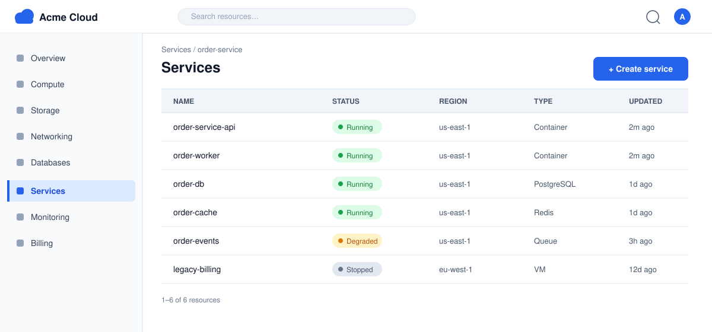

Rotate API Gateway Database Credentials¶
Status: Active · Owner: Platform Team · Last updated: 2026-09-01
Purpose¶
The API gateway authenticates every storefront request against a small backing PostgreSQL database that stores API keys and client credentials. The gateway's database credential is rotated quarterly and immediately on any suspected compromise. This SOP describes how to rotate that credential without dropping authenticated traffic.
Scope¶
- In scope: the credential the API gateway uses to connect to its
auth database (
gateway-auth-db), and the gateway replicas that consume it. - Out of scope: the order service's database credential
(
orders-db), the Redis session store, and the message queue. Each of those has its own rotation cadence and SOP.
Prerequisites¶
- You have
rotatepermission on thegateway-auth-dbcredential in the secret manager. - You can access the Acme Cloud console and the gateway's rollout controls.
- The rotation window is confirmed on the on-call calendar.
Before you start, complete the pre-flight checklist:
- Confirm no deployment is in flight on the gateway
- Verify the secret manager is reachable from the gateway network
- Snapshot the current gateway config for rollback reference
- Check the gateway error rate is at baseline (no open incidents)
- Announce the rotation window in the #ops channel
You will monitor the gateway from the console during the rotation:

Figure 1: The Acme Cloud console Services page. The order-service-api
row is the API gateway; its status must remain Running throughout
the rotation.
Decision path¶
A scheduled rotation and a compromise-driven rotation diverge at the first step: a compromise revokes the old credential before a replacement is deployed, which means a brief window where the gateway cannot reach its auth database.
Procedure¶
- Generate the new credential. In the secret manager, create a
replacement credential for
gateway-auth-db(rolegw_auth_reader_next). Do not reuse the old password value. - Grant access. Grant the new role the same read-only grants as the old role on the auth database.
- Point the gateway at the new credential. Update the gateway's config to reference the new secret path, and save the change.
- Rolling restart. Trigger a rolling restart of the gateway replicas so each replica reconnects with the new credential.
- Watch the rollout. Follow the rollout in the console (Figure 1) and confirm each replica reports Running before the next one is restarted.
- Verify. Complete the verification checklist below.
- Revoke the old credential. Once verification passes, revoke the old credential in the secret manager.
- Record the rotation. Log the rotation (who, when, old and new credential IDs) in the audit log and close the pre-flight ticket.
Warning
Revoking the old credential (step 7) is the destructive step in
this procedure. If any replica is still using the old credential,
it loses access to the auth database and starts rejecting requests
with 500 errors. Only revoke after every replica has been
restarted with the new credential and the verification checklist
passes.
Verification¶
- All gateway replicas report Running in the console
- Gateway health endpoint returns
200on every replica - A test request with a valid API key returns
202 Accepted - A test request with an expired API key returns
401 Unauthorized - Gateway error rate is back to baseline within 15 minutes
- No new
auth-db connection refusedlog entries since the rollout
Rollback¶
If the gateway fails to come up with the new credential, or the error rate spikes during the rollout:
- Restore the previous config snapshot (step 3 in reverse) so the gateway references the old credential again.
- Trigger a rolling restart of the gateway replicas.
- Confirm the gateway is healthy and traffic is normal.
- Leave the old credential active. Do not revoke it until the root cause is fixed and a fresh rotation succeeds.
- File a ticket describing the failure, including the rollout logs and the time window of the error spike.
If the old credential was already revoked (step 7) before the failure was noticed, the fastest recovery is to re-issue the old credential value from the secret manager's audit history, deploy it, and then investigate at lower urgency.